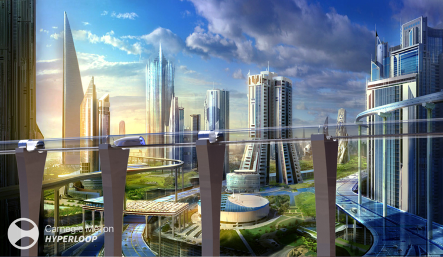

Hyperloop refers to a form of transportation that involves pneumatic or magnetic levitation in a semi-vacuum tube. The term Hyperloop recently gained popularity in 2013 after Elon Musk published a white paper called Hyperloop Alpha proposing the economic, technical, and infrastructural possibilities of building a hyperloop system between San Francisco and Los Angeles California.
Pneumatic transporation, however, is a concept that's been around for a couple centuries. One of the earliest appearances of tubular transport dates back to 1843 with the Dalkey Atmospheric Railway, which was successfully constructed and ran for about 10 years before being closed for integration into the broader railway system. The technology at the time gained some popularity, a similar effort was launched by I.K. Brunel in 1847 but was promptly shut down within a year due exorbatant costs and equipment failure.
